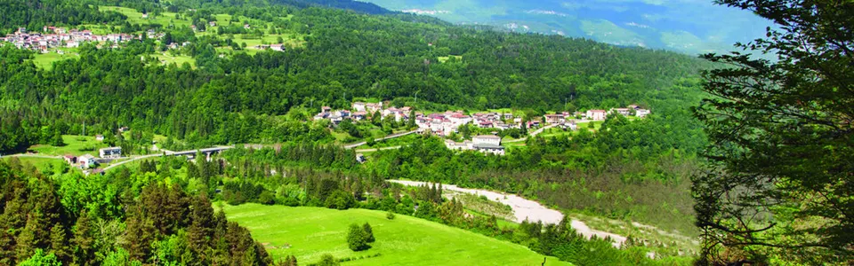

Contatti e come arrivare
La reception è a Mediis, in Via Roma 20. Scrivici o chiamaci per qualsiasi informazione sul soggiorno.
Come arrivare
Indicazioni stradali
Tra le Dolomiti Friulane e le Pesarine.
Socchieve è nell'Alto Friuli, in Carnia, lungo la valle che unisce Villa Santina a Forni di Sotto.
Autostrada A23Uscita Carnia, poi SS52 verso Tolmezzo e Forni di Sopra (27 km dal casello)
Dal CadoreSS52 da Forni di Sopra (26 km)
Da PordenoneSS552 del Monte Rest da Tramonti di Sopra
Dalla Val d'ArzinoStrada comunale di Preone
In aereoAeroporto di Trieste (103 km), Venezia Marco Polo (circa 2 h 30)
In trenoStazione Carnia, poi autobus SAF (fermata a Mediis, Bar alla Posta)
Distanze dalla reception
- Ampezzo4 km · circa 5 min
- Tolmezzo17 km · circa 25 min
- Sauris e il suo lago18 km · circa 25 min
- Forni di Sopra26 km · circa 35 min
- Val Pesarina (Pesariis)25 km · circa 40 min
- Monte Zoncolan24 km · circa 50 min
- Casello A23 Carnia27 km · circa 35 min
- Udine65 km · circa 1 h 10
- Aeroporto di Trieste103 km · circa 1 h 35
- Lignano Sabbiadoro127 km · circa 2 h 05